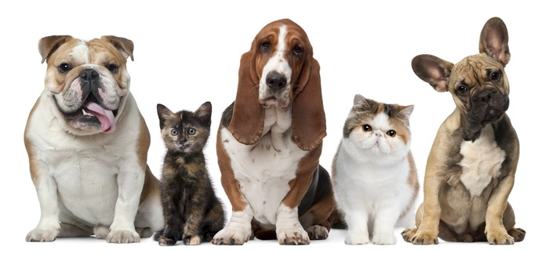

About Us
Inspired by cat and dog lovers, CatDog decided to build a company that can provide you with the best ideas for your pets.
The best part is that we have already selected between the last trends, so you just have to scroll and get amazed.
What we believe
Here at CatDog, we believe that every cat and dog deserve a forever home, and our mission is to help these amazing animals in any way we can. To give back to them, we try to make everyone aware about the fact that they can always adopt. To make this possible, we donate essential supplies to communities that care about them and put them in adoption.
